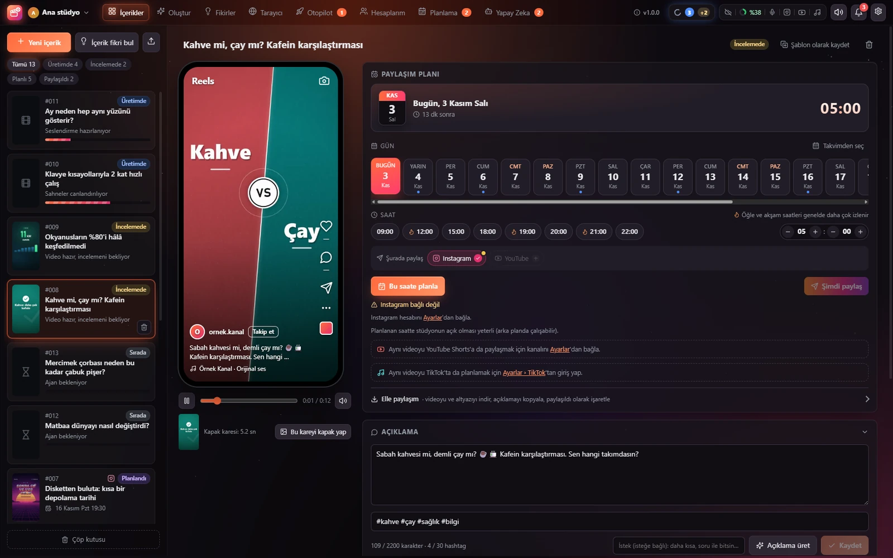

Fikrini yaz, videon hazır olsun.
Sosyal Stüdyo, kısa video üretimini ve paylaşımını tek pencerede toplar. Konseptini yazarsın; Claude ajanları kurguyu, animasyonu, seslendirmeyi ve altyazıyı hazırlar. Sen inceleyip Instagram, YouTube ve TikTok için planlarsın.
A free, open-source Windows studio: write an idea, Claude agents turn it into a narrated short video, then you review it and schedule it for Instagram, YouTube and TikTok. Your data stays on your PC.

Üç adımda fikirden paylaşıma
Konseptini yaz
Ne anlatmak istediğini birkaç cümleyle yaz; formatı, süreyi ve stili seç. Fikrin yoksa stüdyo senin için fikir seti hazırlatır.
Ajanlar üretsin
Claude ajanları metni yazar, sahneleri canlandırır, ElevenLabs ile seslendirir ve altyazıyı ekler. Her adımı canlı izlersin.
İncele ve planla
Telefon önizlemesinde izle, gerekirse ajana not bırak. Açıklamayı üret, saati seç; video Instagram, YouTube ve TikTok'ta zamanında çıksın.
Sosyal medyanı tek yerden yönet
Üretim, araştırma, planlama ve hesap yönetimi aynı uygulamada. Kurulum gerektiren her bağlantının yanında adım adım rehber var.
Konseptten videoya
Videonu anlat, gerisini ajanlara bırak. Hazır bir video stili seç ya da ajanın sana özel serbest bir tasarım yapmasına izin ver.
- 9:16, 1:1, 4:5 ve 16:9 formatları; 15 saniyeden 10 dakikaya kadar süre
- Kinetik yazı, numaralı liste, karşılaştırma, sohbet, sinematik fragman gibi hazır stiller
- ElevenLabs seslendirme ve kelime kelime vurgulanan altyazı
- Hazır ses ya da videonu yükle; konuşma otomatik yazıya dökülsün
İncele, not bırak, düzelt
Her video telefon önizlemesinde, paylaşıldığı haliyle görünür. Beğenmediğin bir yeri yaz; ajan düzeltip yeniden render eder.
- Tek tuşla açıklama ve hashtag üretimi
- Ajana revizyon notu, işlem geçmişi ve seslendirme satırları
- Altyazıyı SRT ya da VTT olarak indir
Fikir bulamadığın günler için
Bir konu yaz, ajan kancası, sahneleri ve seslendirme metniyle birlikte bir fikir seti hazırlasın. Beğendiklerini seç, gerisini ele, seçtiklerini tek tıkla üretime gönder.
Araştırma tarayıcısı ve pano
Stüdyonun içindeki tarayıcıda gezin; ekran görüntüsü, metin ya da sayfanın tamamını panoya at. Araştırma ajanına görev ver, bulduklarını kaynaklarıyla panoya kaydetsin. Pano öğelerini videoya referans olarak ekle.
Kampanya kur, gerisini bırak
Konuları ve video sayısını yaz, stilleri seç, paylaşım saatlerini belirle. Otopilot fikirleri ister, istersen onayını bekler, videoları ürettirir ve takvime yerleştirir.
Takvimde gör, sürükle bırak
Planlı, üretimdeki ve paylaşılmış bütün videolar takvimde. Saati değiştirmek için videoyu başka bir güne sürüklemen yeter; çakışan saatler işaretlenir.
Ajanlarını canlı izle
Hangi ajanın ne üzerinde çalıştığını, sıradaki işleri ve canlı akışı gör. Claude kullanım limitini takip et, ajanların modelini ve efor düzeyini buradan seç.
Hesaplarım
Instagram gönderileri, yorumlar, mesajlar ve istatistikler; YouTube kanalın ve TikTok hesabın aynı sekmede.
Oturumlar
Farklı hesaplar için birbirinden ayrı stüdyolar aç; sol üstteki seçiciden tek tıkla geç.
Bulut yayın
Ücretsiz Cloudflare hesabınla Instagram paylaşımları bilgisayarın kapalıyken de saatinde çıkar.
YouTube ve TikTok
Reels videoların aynı saatte YouTube Shorts olarak ve TikTok'ta da yayınlanabilir.
Bildirimler
Video hazır olunca, ajan notuna yanıt verince ya da paylaşım tamamlanınca haberin olur.
Temalar
Gün Batımı, Aurora, Okyanus, Neon, Orman, Gece ve Klasik; istersen hareketli efektleri kapat.
Yakından bak
Beş adımda hazırsın
Teknik bilgi gerekmez. Bağlantı kuran her adımda Claude ile kur düğmesi var: adımları senin yerine sıralayan hazır bir mesajı Claude'a yapıştırırsın, Claude seni tek tek yönlendirir.
Kurulum dosyasını indir
SosyalStudyo-Kurulum.exe dosyasını indir ve çalıştır. Kurulum yönetici izni istemez; stüdyo masaüstüne ve Başlat menüsüne eklenir.
SmartScreen uyarısını geç
Kurulum dosyası dijital olarak imzalı olmadığı için Windows bir uyarı gösterebilir.
İlk açılışta eksik bileşenleri tamamla
Stüdyo ilk açıldığında Kurulum durumu kartı gösterir: video motoru için Node.js, ses ve video işleme için ffmpeg, TikTok için Playwright, hazır ses/video için konuşma tanıma modeli gibi eksikleri listeler. Kurulum düğmesi olanları tek tıkla kur, diğerleri için rehberi izle.
Hesaplarını bağla
Ayarlar'dan ElevenLabs, Instagram, YouTube, TikTok ve Cloudflare bağlantılarını kur. Hepsi isteğe bağlı; yalnızca kullanacaklarını bağla. Her birinin yanındaki Claude ile kur düğmesi kurulumu adım adım anlatan mesajı hazırlar.
Ajanları başlat
Videoları Claude Code oturumları üretir. Claude masaüstü uygulamasında Code sekmesinden stüdyo klasöründe yeni bir oturum aç, stüdyonun üst çubuğundaki Claude göstergesinden kopyaladığın ajan metnini yapıştır. Ajan iş beklemeye başlar ve Yapay Zeka sekmesinde görünür.
Gereksinimler
- Windows 10 ya da 11, 64 bit
- Microsoft Edge (Windows'ta hazır gelir) ya da Google Chrome; videolar tarayıcı motoruyla render edilir
- Ajanlar için Claude aboneliği ve Claude masaüstü uygulaması (Claude Code)
- Seslendirme için ElevenLabs hesabı (başlamak için ücretsiz plan yeterli)
- İnternet bağlantısı; paylaşım için Instagram, YouTube ya da TikTok hesabı
Gizlilik
- Her şey bilgisayarında. İçeriklerin, videoların ve ayarların yerel klasörde durur.
- Telemetri yok. Stüdyo kullanım verisi toplamaz, kimseye rapor göndermez.
- Anahtarların sende. API anahtarları ve erişim izinleri yalnızca senin bilgisayarında saklanır; stüdyo onları sadece ilgili servise bağlanmak için kullanır.
- Bulut isteğe bağlı. Bulut yayını açarsan planlı videolar senin kendi Cloudflare hesabına yüklenir.
- Açık kaynak. Kodun tamamı GitHub'da; ne yaptığını kendin inceleyebilirsin.
Sosyal Stüdyo'yu indir
Ücretsiz, açık kaynak ve reklamsız. Kurulum tek dosya; güncellemeler stüdyonun üst çubuğunda görünür.
Sorular
Sosyal Stüdyo ücretli mi?
Hayır. Stüdyo ücretsiz ve MIT lisanslı açık kaynak. Videoları üreten Claude ajanları için Claude aboneliği, seslendirme için ElevenLabs hesabı gerekir; bunlar kendi hesapların üzerinden çalışır.
Bilgisayarım kapalıyken paylaşım yapılır mı?
Evet. Bulut yayını açarsan planlı Instagram videoları ücretsiz Cloudflare hesabına yüklenir ve saati gelince oradan paylaşılır. YouTube ve TikTok'ta video önceden yüklenir, yayını platformun kendi zamanlayıcısı yapar.
Ajan nedir, neden Claude gerekiyor?
Stüdyo videoları kendisi üretmez; işleri Claude Code oturumları yapar. Her ajan stüdyo klasöründeki talimatları izler, sıradaki işi alır, videoyu hazırlar ve sonucu stüdyoya bildirir. Birden fazla ajanı aynı anda çalıştırabilirsin.
Bağlantıları kurmak zor mu?
Her bağlantının yanında Claude ile kur düğmesi ve yazılı bir rehber var. Düğme, kurulumu adım adım anlatan hazır bir mesaj oluşturur; Claude ekranları tek tek tarif eder. Şifre ve anahtarları her zaman sen yapıştırırsın.
Windows “bilinmeyen yayıncı” diyor, güvenli mi?
Kurulum dosyası dijital olarak imzalı olmadığı için SmartScreen uyarı gösterir. Dosyayı yalnızca bu sayfadan ya da GitHub sürümlerinden indir; kaynak kodu herkese açık.